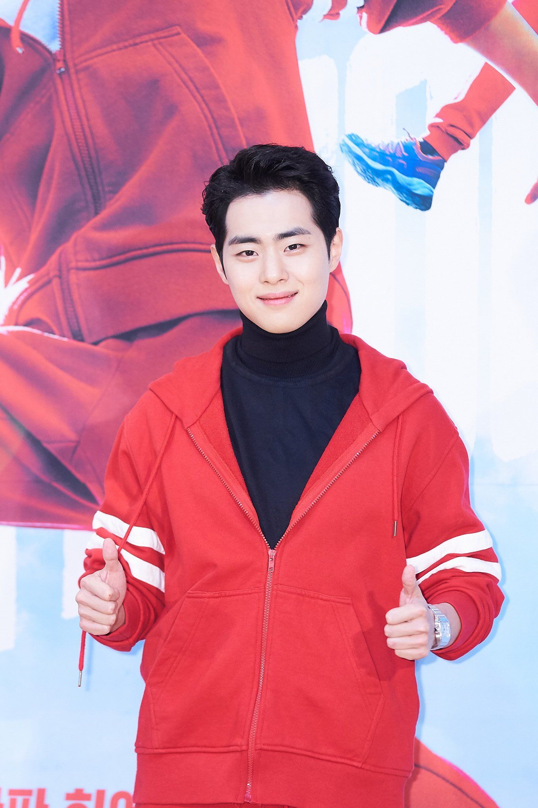

Anh là một thành viên của đội Bộ đếm; một cựu cảnh sát và làm phụ bếp tại Quán Mì của Chị. Mo-tak được chú ý với vẻ ngoài cộc cằn nhưng anh cũng là một người hay pha trò. Anh bị hôn mê sau khi rơi xuống từ một tòa nhà cao tầng trong một cuộc chiến đẫm máu chống lại một băng nhóm xã hội đen 7 năm trước. Sau vụ việc xảy ra khiến anh bị mất trí nhớ. Anh ta trở thành một Counter khi bị chiếm hữu bởi cộng sự Yung của mình là Gi-ran. Ban đầu, anh miễn cưỡng chấp nhân So Mun cùng tham gia bởi vì điểm yếu rõ ràng của mình, nhưng sau đó anh đã giúp nuôi dưỡng Mun để sau này có thể trở thành một Counter tốt. Là một Counter, anh ta sở hữu sức mạnh siêu phàm và khả năng đo tâm lý tầm ngắn.
